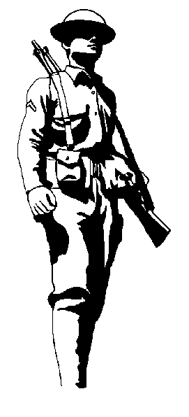

1914
In August, as soon as
the war began, Charles Consigny volunteered. He did
basic military training at Camp Valcartier, then was
transferred to England in October. The first Canadian
contingent was sent to Bustard Camp on Salisbury
Plain. More intensive training, the gradual arrival
of equipment, and rain three days out of four:
that was the soldiers' daily life. Charles was
attached to the D.A.C., a supply unit.
1915
In February, Charles crossed to France. He was landed at
St-Nazaire and made a two-day train journey to
Hazebrouck, behind the front. At the end of the month Charles
was put under arrest for fifteen days after being absent without
leave for three days.
In March Charles was transferred to the 1st Canadian Heavy Battery
and became a gunner. In May he took part in the Battle of
Aubers Ridge and the Battle of Festubert; in June, the Battle of
Givenchy. There he was found guilty of a second
offence, neglect of duty, and sentenced to five
days' arrest. In September he was at the Battle of Loos.
1916 The winter
was long. In April, Charles was hospitalized for two weeks with
"Cervical Adenitis". At the end of June, Charles's unit
was taken by train toward Amiens to take part in the
Battle of the Somme. It began on July 1 and lasted more
than five months, without any respite. More
than a thousand salvoes were fired every day, day and night.
1917 From
January 12 to 23, Charles had his first leave.
A few weeks later he was hospitalized for a
venereal disease. In early March he was transferred to a
hospital in Le Havre, Normandy. He returned to his unit in May,
in the Vimy area, where the fighting was fierce. In
the fall the battle shifted to the Ypres salient. At the end of
October, it was the Battle of Passchendaele for Charles. On December
23, Charles had a second leave. He visited
Bordeaux.
1918 Charles
returned to his unit on January 6. At the end of the month he was
hospitalized for the third time. He was suffering from "lymphangilis"
and was treated at Camiers, in the Pas-de-Calais, until February
13. Then he went back to the Vimy area, where the
fighting was raging.
On June 18 he was hospitalized again, along with several
of his comrades, after an epidemic of "three days
fever". He returned to his unit on June 24. In August he
took part in the Battle of Arras. In September it was the Battle
of the Canal du Nord. The fighting went on fiercely in
October.
November 11, the Armistice. At the end of the month, Charles and
his unit marched all the way to Namur, in Belgium. Then they
marched on, in short stages, toward Bonn in Germany.
They arrived on December 16 and served there as an army
of occupation.
1919 In
January Charles had a leave. In
February Charles's unit was back in Namur. On February 25
Charles was
hospitalized with Spanish flu. He was
transferred to a military hospital in England.
On April 14 Charles was sent to a transit camp to
wait to be shipped back to Canada. On May 14 he sailed from
Liverpool, and he was in Quebec City on May 26.
|